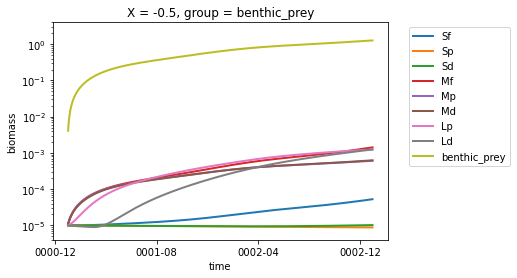

Running the model
Contents
Running the model#
Setup a feisty integration.
import matplotlib.pyplot as plt
import feisty
Configure testcase to run#
testcase = feisty.config_testcase("tanh_shelf", "cyclic")
Run the model#
testcase.run(730)
Output#
testcase.ds.info()
xarray.Dataset {
dimensions:
X = 22 ;
group = 9 ;
time = 730 ;
fish = 8 ;
feeding_link = 19 ;
variables:
float64 X(X) ;
<U12 group(group) ;
float64 biomass(time, group, X) ;
<U2 fish(fish) ;
<U15 feeding_link(feeding_link) ;
<U2 predator(feeding_link) ;
<U12 prey(feeding_link) ;
float64 T_habitat(time, fish, X) ;
float64 ingestion_rate(time, fish, X) ;
float64 predation_flux(time, fish, X) ;
float64 predation_rate(time, fish, X) ;
float64 metabolism_rate(time, fish, X) ;
float64 mortality_rate(time, fish, X) ;
float64 energy_avail_rate(time, fish, X) ;
float64 growth_rate(time, fish, X) ;
float64 reproduction_rate(time, fish, X) ;
float64 recruitment_flux(time, fish, X) ;
float64 fish_catch_rate(time, fish, X) ;
float64 encounter_rate_link(time, feeding_link, X) ;
float64 encounter_rate_total(time, fish, X) ;
float64 consumption_rate_max_pred(time, fish, X) ;
float64 consumption_rate_link(time, feeding_link, X) ;
object time(time) ;
// global attributes:
}
test_ds = testcase.ds.isel(X=0, time=0)
for group in test_ds.group.data:
testcase.ds.biomass.sel(group=group).isel(X=0).plot(linewidth=2)
plt.ylim([4e-6, 4])
plt.yscale("log")
plt.legend(test_ds.group.data, bbox_to_anchor=(1.05, 1.0));
